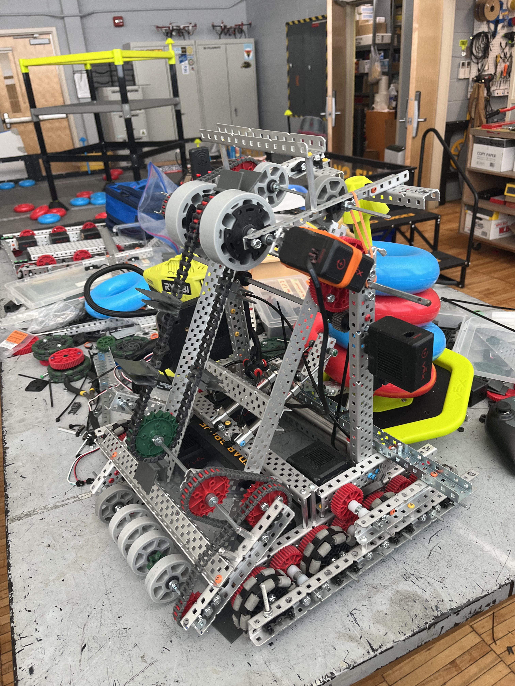

Prototype 01
Establishing the first layout
The first build combined the drivetrain and scoring concept into a testable robot, revealing packaging limits, weight-distribution issues, and weak object transitions.
Purpose: validate the overall architecture.